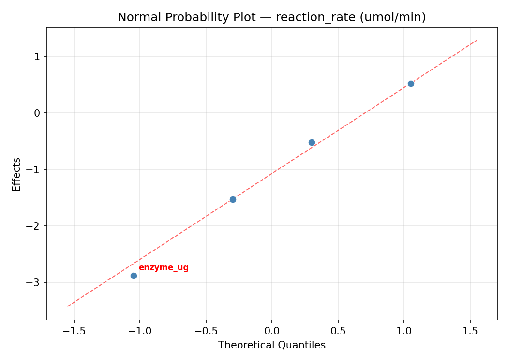
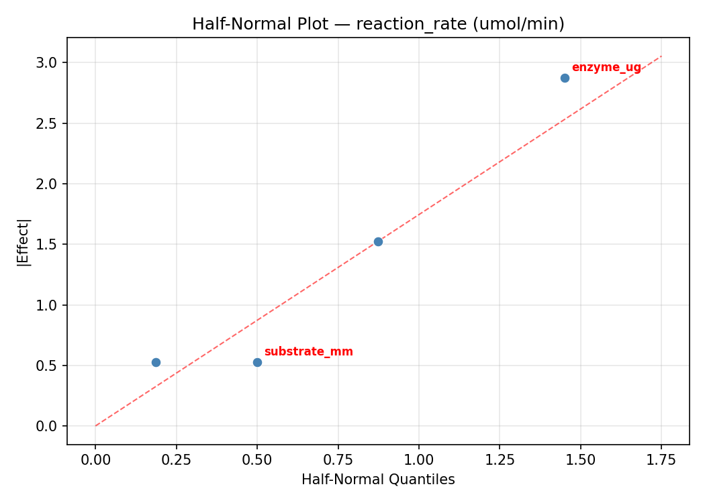
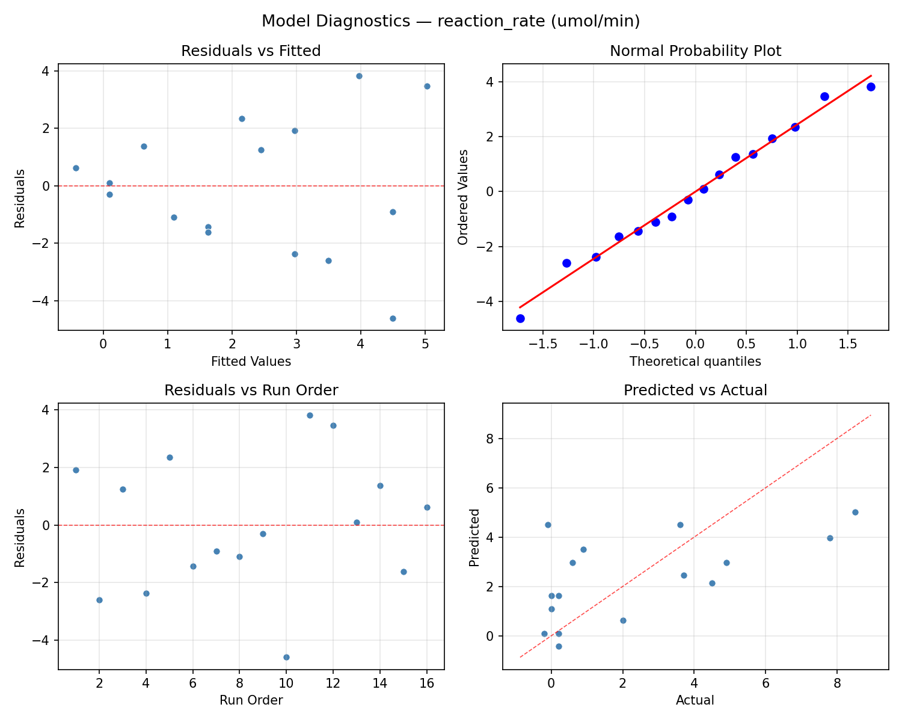
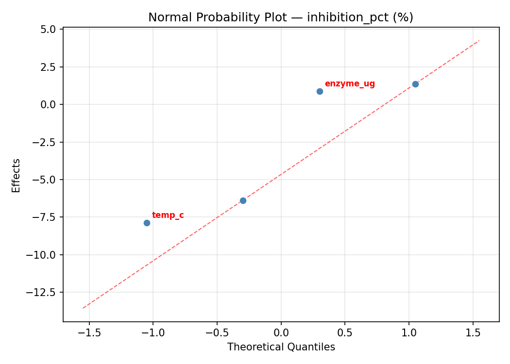
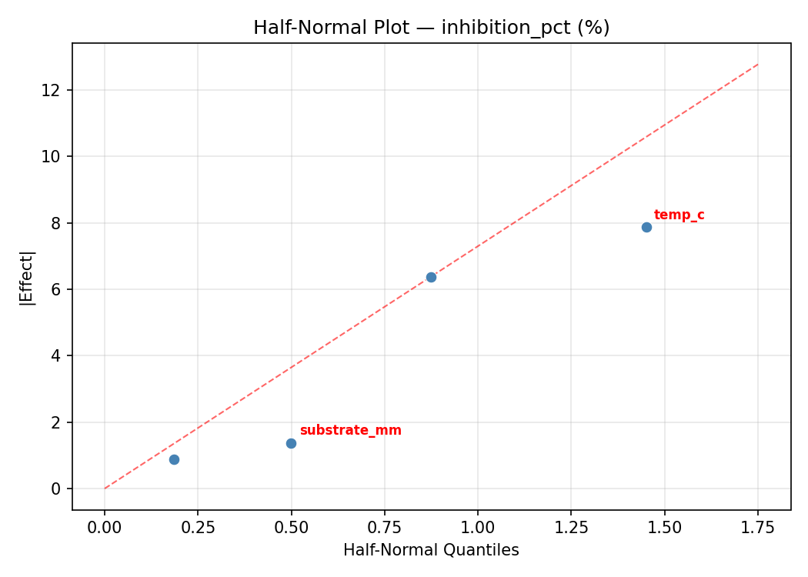
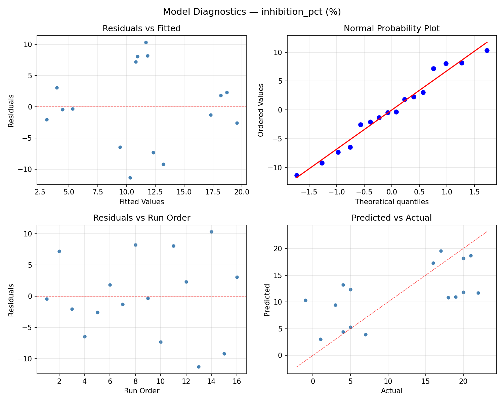

Summary
This experiment investigates enzyme kinetics assay. Full factorial of substrate concentration, enzyme amount, pH, and temperature to maximize reaction rate and minimize substrate inhibition.
The design varies 4 factors: substrate mm (mM), ranging from 0.1 to 10, enzyme ug (ug), ranging from 1 to 20, ph (pH), ranging from 5 to 9, and temp c (C), ranging from 20 to 45. The goal is to optimize 2 responses: reaction rate (umol/min) (maximize) and inhibition pct (%) (minimize). Fixed conditions held constant across all runs include enzyme = alkaline_phosphatase, buffer = tris.
A full factorial design was used to explore all 16 possible combinations of the 4 factors at two levels. This guarantees that every main effect and interaction can be estimated independently, at the cost of a larger experiment (16 runs).
Quadratic response surface models were fitted to capture potential curvature and factor interactions. The RSM contour plots below visualize how pairs of factors jointly affect each response.
Key Findings
For reaction rate, the most influential factors were temp c (40.7%), enzyme ug (30.2%), substrate mm (23.3%). The best observed value was 8.5 (at substrate mm = 0.1, enzyme ug = 20, ph = 9).
For inhibition pct, the most influential factors were substrate mm (38.3%), temp c (31.1%), enzyme ug (17.9%). The best observed value was -1.0 (at substrate mm = 0.1, enzyme ug = 1, ph = 9).
Recommended Next Steps
- Consider whether any fixed factors should be varied in a future study.
Experimental Setup
Factors
| Factor | Low | High | Unit |
|---|
substrate_mm | 0.1 | 10 | mM |
enzyme_ug | 1 | 20 | ug |
ph | 5 | 9 | pH |
temp_c | 20 | 45 | C |
Fixed: enzyme = alkaline_phosphatase, buffer = tris
Responses
| Response | Direction | Unit |
|---|
reaction_rate | ↑ maximize | umol/min |
inhibition_pct | ↓ minimize | % |
Configuration
{
"metadata": {
"name": "Enzyme Kinetics Assay",
"description": "Full factorial of substrate concentration, enzyme amount, pH, and temperature to maximize reaction rate and minimize substrate inhibition"
},
"factors": [
{
"name": "substrate_mm",
"levels": [
"0.1",
"10"
],
"type": "continuous",
"unit": "mM"
},
{
"name": "enzyme_ug",
"levels": [
"1",
"20"
],
"type": "continuous",
"unit": "ug"
},
{
"name": "ph",
"levels": [
"5",
"9"
],
"type": "continuous",
"unit": "pH"
},
{
"name": "temp_c",
"levels": [
"20",
"45"
],
"type": "continuous",
"unit": "C"
}
],
"fixed_factors": {
"enzyme": "alkaline_phosphatase",
"buffer": "tris"
},
"responses": [
{
"name": "reaction_rate",
"optimize": "maximize",
"unit": "umol/min"
},
{
"name": "inhibition_pct",
"optimize": "minimize",
"unit": "%"
}
],
"settings": {
"operation": "full_factorial",
"test_script": "use_cases/195_enzyme_kinetics/sim.sh"
}
}
Experimental Matrix
The Full Factorial Design produces 16 runs. Each row is one experiment with specific factor settings.
| Run | substrate_mm | enzyme_ug | ph | temp_c |
|---|
| 1 | 0.1 | 20 | 9 | 45 |
| 2 | 10 | 1 | 5 | 45 |
| 3 | 0.1 | 20 | 5 | 45 |
| 4 | 0.1 | 20 | 9 | 20 |
| 5 | 10 | 20 | 9 | 20 |
| 6 | 10 | 1 | 9 | 20 |
| 7 | 10 | 20 | 5 | 20 |
| 8 | 10 | 1 | 5 | 20 |
| 9 | 0.1 | 1 | 5 | 45 |
| 10 | 0.1 | 1 | 9 | 20 |
| 11 | 10 | 20 | 5 | 45 |
| 12 | 10 | 20 | 9 | 45 |
| 13 | 0.1 | 20 | 5 | 20 |
| 14 | 10 | 1 | 9 | 45 |
| 15 | 0.1 | 1 | 5 | 20 |
| 16 | 0.1 | 1 | 9 | 45 |
Step-by-Step Workflow
1
Preview the design
$ python doe.py info --config use_cases/195_enzyme_kinetics/config.json
2
Generate the runner script
$ python doe.py generate --config use_cases/195_enzyme_kinetics/config.json \
--output use_cases/195_enzyme_kinetics/results/run.sh --seed 42
3
Execute the experiments
$ bash use_cases/195_enzyme_kinetics/results/run.sh
4
Analyze results
$ python doe.py analyze --config use_cases/195_enzyme_kinetics/config.json
5
Get optimization recommendations
$ python doe.py optimize --config use_cases/195_enzyme_kinetics/config.json
6
Multi-objective optimization
With 2 competing responses, use --multi to find the best compromise via Derringer–Suich desirability.
$ python doe.py optimize --config use_cases/195_enzyme_kinetics/config.json --multi
7
Generate the HTML report
$ python doe.py report --config use_cases/195_enzyme_kinetics/config.json \
--output use_cases/195_enzyme_kinetics/results/report.html
Features Exercised
| Feature | Value |
|---|
| Design type | full_factorial |
| Factor types | continuous (all 4) |
| Arg style | double-dash |
| Responses | 2 (reaction_rate ↑, inhibition_pct ↓) |
| Total runs | 16 |
Analysis Results
Generated from actual experiment runs using the DOE Helper Tool.
Response: reaction_rate
Top factors: temp_c (40.7%), enzyme_ug (30.2%), substrate_mm (23.3%).
ANOVA
| Source | DF | SS | MS | F | p-value |
|---|
| Source | DF | SS | MS | F | p-value |
| substrate_mm | 1 | 4.8400 | 4.8400 | 4.310 | 0.0925 |
| enzyme_ug | 1 | 8.1225 | 8.1225 | 7.233 | 0.0433 |
| ph | 1 | 0.3025 | 0.3025 | 0.269 | 0.6259 |
| temp_c | 1 | 14.8225 | 14.8225 | 13.199 | 0.0150 |
| substrate_mm*enzyme_ug | 1 | 0.3025 | 0.3025 | 0.269 | 0.6259 |
| substrate_mm*ph | 1 | 27.5625 | 27.5625 | 24.544 | 0.0043 |
| substrate_mm*temp_c | 1 | 30.8025 | 30.8025 | 27.429 | 0.0034 |
| enzyme_ug*ph | 1 | 5.7600 | 5.7600 | 5.129 | 0.0729 |
| enzyme_ug*temp_c | 1 | 2.5600 | 2.5600 | 2.280 | 0.1915 |
| ph*temp_c | 1 | 24.0100 | 24.0100 | 21.380 | 0.0057 |
| Error | 5 | 5.6150 | 1.1230 | | |
| Total | 15 | 124.7000 | 8.3133 | | |
Pareto Chart

Main Effects Plot

Normal Probability Plot of Effects

Half-Normal Plot of Effects

Model Diagnostics

Response: inhibition_pct
Top factors: substrate_mm (38.3%), temp_c (31.1%), enzyme_ug (17.9%).
ANOVA
| Source | DF | SS | MS | F | p-value |
|---|
| Source | DF | SS | MS | F | p-value |
| substrate_mm | 1 | 351.5625 | 351.5625 | 21.099 | 0.0059 |
| enzyme_ug | 1 | 76.5625 | 76.5625 | 4.595 | 0.0849 |
| ph | 1 | 39.0625 | 39.0625 | 2.344 | 0.1863 |
| temp_c | 1 | 232.5625 | 232.5625 | 13.957 | 0.0135 |
| substrate_mm*enzyme_ug | 1 | 60.0625 | 60.0625 | 3.605 | 0.1161 |
| substrate_mm*ph | 1 | 76.5625 | 76.5625 | 4.595 | 0.0849 |
| substrate_mm*temp_c | 1 | 5.0625 | 5.0625 | 0.304 | 0.6052 |
| enzyme_ug*ph | 1 | 1.5625 | 1.5625 | 0.094 | 0.7718 |
| enzyme_ug*temp_c | 1 | 7.5625 | 7.5625 | 0.454 | 0.5304 |
| ph*temp_c | 1 | 115.5625 | 115.5625 | 6.935 | 0.0463 |
| Error | 5 | 83.3125 | 16.6625 | | |
| Total | 15 | 1049.4375 | 69.9625 | | |
Pareto Chart

Main Effects Plot

Normal Probability Plot of Effects

Half-Normal Plot of Effects

Model Diagnostics

Response Surface Plots
3D surfaces fitted with quadratic RSM. Red dots are observed data points.
inhibition pct enzyme ug vs ph

inhibition pct enzyme ug vs temp c

inhibition pct ph vs temp c

inhibition pct substrate mm vs enzyme ug

inhibition pct substrate mm vs ph

inhibition pct substrate mm vs temp c

reaction rate enzyme ug vs ph

reaction rate enzyme ug vs temp c

reaction rate ph vs temp c

reaction rate substrate mm vs enzyme ug

reaction rate substrate mm vs ph

reaction rate substrate mm vs temp c

Multi-Objective Optimization
When responses compete, Derringer–Suich desirability finds the best compromise.
Each response is scaled to a 0–1 desirability, then combined via a weighted geometric mean.
Overall Desirability
D = 0.6441
Per-Response Desirability
| Response | Weight | Desirability | Predicted | Dir |
|---|
reaction_rate |
1.5 |
|
4.90 0.5784 4.90 umol/min |
↑ |
inhibition_pct |
1.0 |
|
4.00 0.7569 4.00 % |
↓ |
Recommended Settings
| Factor | Value |
|---|
substrate_mm | 0.1 mM |
enzyme_ug | 1 ug |
ph | 5 pH |
temp_c | 45 C |
Source: from observed run #1
Trade-off Summary
Sacrifice = how much worse than single-objective best.
| Response | Predicted | Best Observed | Sacrifice |
|---|
inhibition_pct | 4.00 | -1.00 | +5.00 |
Top 3 Runs by Desirability
| Run | D | Factor Settings |
|---|
| #3 | 0.5896 | substrate_mm=10, enzyme_ug=20, ph=9, temp_c=20 |
| #11 | 0.4499 | substrate_mm=10, enzyme_ug=20, ph=5, temp_c=45 |
Model Quality
| Response | R² | Type |
|---|
inhibition_pct | 0.2913 | linear |
Full Multi-Objective Output
============================================================
MULTI-OBJECTIVE OPTIMIZATION
Method: Derringer-Suich Desirability Function
============================================================
Overall desirability: D = 0.6441
Response Weight Desirability Predicted Direction
---------------------------------------------------------------------
reaction_rate 1.5 0.5784 4.90 umol/min ↑
inhibition_pct 1.0 0.7569 4.00 % ↓
Recommended settings:
substrate_mm = 0.1 mM
enzyme_ug = 1 ug
ph = 5 pH
temp_c = 45 C
(from observed run #1)
Trade-off summary:
reaction_rate: 4.90 (best observed: 8.50, sacrifice: +3.60)
inhibition_pct: 4.00 (best observed: -1.00, sacrifice: +5.00)
Model quality:
reaction_rate: R² = 0.2574 (linear)
inhibition_pct: R² = 0.2913 (linear)
Top 3 observed runs by overall desirability:
1. Run #1 (D=0.6441): substrate_mm=0.1, enzyme_ug=1, ph=5, temp_c=45
2. Run #3 (D=0.5896): substrate_mm=10, enzyme_ug=20, ph=9, temp_c=20
3. Run #11 (D=0.4499): substrate_mm=10, enzyme_ug=20, ph=5, temp_c=45
Full Analysis Output
=== Main Effects: reaction_rate ===
Factor Effect Std Error % Contribution
--------------------------------------------------------------
temp_c 1.9250 0.7208 40.7%
enzyme_ug -1.4250 0.7208 30.2%
substrate_mm -1.1000 0.7208 23.3%
ph -0.2750 0.7208 5.8%
=== ANOVA Table: reaction_rate ===
Source DF SS MS F p-value
-----------------------------------------------------------------------------
substrate_mm 1 4.8400 4.8400 4.310 0.0925
enzyme_ug 1 8.1225 8.1225 7.233 0.0433
ph 1 0.3025 0.3025 0.269 0.6259
temp_c 1 14.8225 14.8225 13.199 0.0150
substrate_mm*enzyme_ug 1 0.3025 0.3025 0.269 0.6259
substrate_mm*ph 1 27.5625 27.5625 24.544 0.0043
substrate_mm*temp_c 1 30.8025 30.8025 27.429 0.0034
enzyme_ug*ph 1 5.7600 5.7600 5.129 0.0729
enzyme_ug*temp_c 1 2.5600 2.5600 2.280 0.1915
ph*temp_c 1 24.0100 24.0100 21.380 0.0057
Error 5 5.6150 1.1230
Total 15 124.7000 8.3133
=== Interaction Effects: reaction_rate ===
Factor A Factor B Interaction % Contribution
------------------------------------------------------------------------
substrate_mm temp_c -2.7750 27.4%
substrate_mm ph -2.6250 25.9%
ph temp_c 2.4500 24.2%
enzyme_ug ph 1.2000 11.9%
enzyme_ug temp_c -0.8000 7.9%
substrate_mm enzyme_ug 0.2750 2.7%
=== Summary Statistics: reaction_rate ===
substrate_mm:
Level N Mean Std Min Max
------------------------------------------------------------
0.1 8 2.8500 3.6340 -0.2000 8.5000
10 8 1.7500 1.9792 -0.1000 4.9000
enzyme_ug:
Level N Mean Std Min Max
------------------------------------------------------------
1 8 3.0125 2.9696 -0.2000 8.5000
20 8 1.5875 2.7992 0.0000 7.8000
ph:
Level N Mean Std Min Max
------------------------------------------------------------
5 8 2.4375 1.9921 0.0000 4.9000
9 8 2.1625 3.7152 -0.2000 8.5000
temp_c:
Level N Mean Std Min Max
------------------------------------------------------------
20 8 1.3375 1.9827 -0.2000 4.9000
45 8 3.2625 3.4301 0.0000 8.5000
=== Main Effects: inhibition_pct ===
Factor Effect Std Error % Contribution
--------------------------------------------------------------
substrate_mm -9.3750 2.0911 38.3%
temp_c 7.6250 2.0911 31.1%
enzyme_ug -4.3750 2.0911 17.9%
ph -3.1250 2.0911 12.8%
=== ANOVA Table: inhibition_pct ===
Source DF SS MS F p-value
-----------------------------------------------------------------------------
substrate_mm 1 351.5625 351.5625 21.099 0.0059
enzyme_ug 1 76.5625 76.5625 4.595 0.0849
ph 1 39.0625 39.0625 2.344 0.1863
temp_c 1 232.5625 232.5625 13.957 0.0135
substrate_mm*enzyme_ug 1 60.0625 60.0625 3.605 0.1161
substrate_mm*ph 1 76.5625 76.5625 4.595 0.0849
substrate_mm*temp_c 1 5.0625 5.0625 0.304 0.6052
enzyme_ug*ph 1 1.5625 1.5625 0.094 0.7718
enzyme_ug*temp_c 1 7.5625 7.5625 0.454 0.5304
ph*temp_c 1 115.5625 115.5625 6.935 0.0463
Error 5 83.3125 16.6625
Total 15 1049.4375 69.9625
=== Interaction Effects: inhibition_pct ===
Factor A Factor B Interaction % Contribution
------------------------------------------------------------------------
ph temp_c 5.3750 32.1%
substrate_mm ph 4.3750 26.1%
substrate_mm enzyme_ug -3.8750 23.1%
enzyme_ug temp_c -1.3750 8.2%
substrate_mm temp_c 1.1250 6.7%
enzyme_ug ph -0.6250 3.7%
=== Summary Statistics: inhibition_pct ===
substrate_mm:
Level N Mean Std Min Max
------------------------------------------------------------
0.1 8 16.0000 7.2506 4.0000 22.0000
10 8 6.6250 6.8648 -1.0000 18.0000
enzyme_ug:
Level N Mean Std Min Max
------------------------------------------------------------
1 8 13.5000 7.5782 4.0000 22.0000
20 8 9.1250 9.0307 -1.0000 20.0000
ph:
Level N Mean Std Min Max
------------------------------------------------------------
5 8 12.8750 8.6922 1.0000 22.0000
9 8 9.7500 8.2937 -1.0000 21.0000
temp_c:
Level N Mean Std Min Max
------------------------------------------------------------
20 8 7.5000 8.6023 -1.0000 22.0000
45 8 15.1250 6.5343 3.0000 21.0000
Optimization Recommendations
=== Optimization: reaction_rate ===
Direction: maximize
Best observed run: #12
substrate_mm = 0.1
enzyme_ug = 20
ph = 9
temp_c = 20
Value: 8.5
RSM Model (linear, R² = 0.3478, Adj R² = 0.1107):
Coefficients:
intercept +2.3000
substrate_mm -1.0250
enzyme_ug +0.7375
ph -0.4625
temp_c -0.9500
RSM Model (quadratic, R² = 0.5248, Adj R² = -6.1277):
Coefficients:
intercept +0.4600
substrate_mm -1.0250
enzyme_ug +0.7375
ph -0.4625
temp_c -0.9500
substrate_mm*enzyme_ug -0.5875
substrate_mm*ph +0.1375
substrate_mm*temp_c +0.7500
enzyme_ug*ph +0.1000
enzyme_ug*temp_c -0.3125
ph*temp_c +0.5875
substrate_mm^2 +0.4600
enzyme_ug^2 +0.4600
ph^2 +0.4600
temp_c^2 +0.4600
Curvature analysis:
substrate_mm coef=+0.4600 convex (has a minimum)
temp_c coef=+0.4600 convex (has a minimum)
enzyme_ug coef=+0.4600 convex (has a minimum)
ph coef=+0.4600 convex (has a minimum)
Notable interactions:
substrate_mm*temp_c coef=+0.7500 (synergistic)
substrate_mm*enzyme_ug coef=-0.5875 (antagonistic)
ph*temp_c coef=+0.5875 (synergistic)
enzyme_ug*temp_c coef=-0.3125 (antagonistic)
Predicted optimum (from linear model, at observed points):
substrate_mm = 0.1
enzyme_ug = 20
ph = 5
temp_c = 20
Predicted value: 5.4750
Surface optimum (via L-BFGS-B, linear model):
substrate_mm = 0.1
enzyme_ug = 20
ph = 5
temp_c = 20
Predicted value: 5.4750
Model quality: Weak fit — consider adding center points or using a different design.
Factor importance:
1. substrate_mm (effect: -2.0, contribution: 32.3%)
2. temp_c (effect: -1.9, contribution: 29.9%)
3. enzyme_ug (effect: 1.5, contribution: 23.2%)
4. ph (effect: -0.9, contribution: 14.6%)
=== Optimization: inhibition_pct ===
Direction: minimize
Best observed run: #13
substrate_mm = 0.1
enzyme_ug = 1
ph = 9
temp_c = 20
Value: -1.0
RSM Model (linear, R² = 0.3452, Adj R² = 0.1071):
Coefficients:
intercept +11.3125
substrate_mm -1.9375
enzyme_ug +4.0625
ph +0.5625
temp_c -1.4375
RSM Model (quadratic, R² = 0.8944, Adj R² = -0.5839):
Coefficients:
intercept +2.2625
substrate_mm -1.9375
enzyme_ug +4.0625
ph +0.5625
temp_c -1.4375
substrate_mm*enzyme_ug -1.6875
substrate_mm*ph +1.5625
substrate_mm*temp_c -0.9375
enzyme_ug*ph +4.8125
enzyme_ug*temp_c +1.5625
ph*temp_c +2.0625
substrate_mm^2 +2.2625
enzyme_ug^2 +2.2625
ph^2 +2.2625
temp_c^2 +2.2625
Curvature analysis:
substrate_mm coef=+2.2625 convex (has a minimum)
enzyme_ug coef=+2.2625 convex (has a minimum)
temp_c coef=+2.2625 convex (has a minimum)
ph coef=+2.2625 convex (has a minimum)
Notable interactions:
enzyme_ug*ph coef=+4.8125 (synergistic)
ph*temp_c coef=+2.0625 (synergistic)
substrate_mm*enzyme_ug coef=-1.6875 (antagonistic)
substrate_mm*ph coef=+1.5625 (synergistic)
enzyme_ug*temp_c coef=+1.5625 (synergistic)
substrate_mm*temp_c coef=-0.9375 (antagonistic)
Predicted optimum (from linear model, at observed points):
substrate_mm = 0.1
enzyme_ug = 20
ph = 9
temp_c = 20
Predicted value: 19.3125
Surface optimum (via L-BFGS-B, linear model):
substrate_mm = 10
enzyme_ug = 1
ph = 5
temp_c = 45
Predicted value: 3.3125
Model quality: Weak fit — consider adding center points or using a different design.
Factor importance:
1. enzyme_ug (effect: 8.1, contribution: 50.8%)
2. substrate_mm (effect: -3.9, contribution: 24.2%)
3. temp_c (effect: -2.9, contribution: 18.0%)
4. ph (effect: 1.1, contribution: 7.0%)